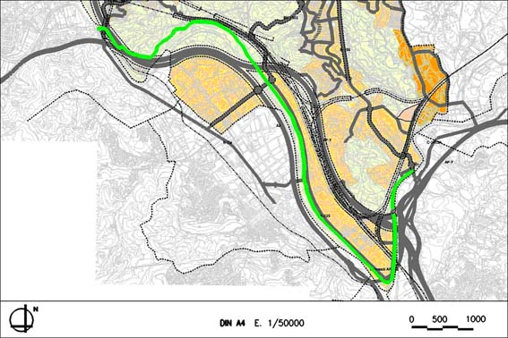

Objectiu:
- Recuperar l’antic traçat de la Via Augusta, aportant al terme municipal un eix de comunicacions peatonals, seguint la llera del riu Llobregat.
- Definir exactament el traçat de la Via Augusta
Règim del sòl: Sòl no urbanitzable
Longitud: 10.390ml
Característiques:
- Amplada: 4m
- Paviment no asfaltat
- Senyalització
Condicions:
- Àmbit del Pla Especial: S’adjunta plànol amb la seva delimitació.
- El Pla Especial podrà modificar el seu àmbit per tal d’aconseguir una millor adaptació als objectius i criteris marcats pel POUM.
PEU 01 “ (Pla Especial Urbanístic de la Via Augusta)”Delimitació